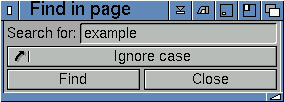
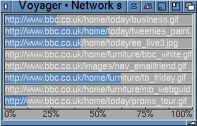
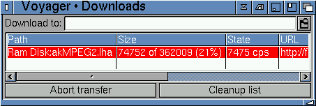
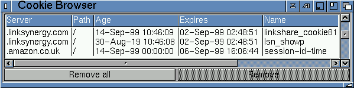
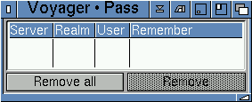
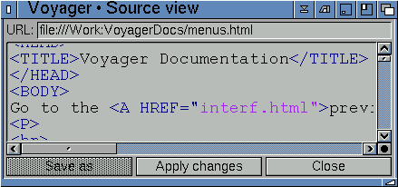
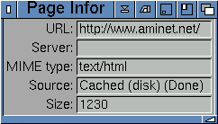

|
3.41 Voyager Menu
Open file opens a file requestor where you can choose a
HTML document, text file or image (JPG, GIF, PNG) file. The document will show
within the main Voyager window.
Save as allows you to save the current document as a particular
file name, in HTML format. Save contents as a text file. Print the current page. Printing was incomplete after Voyager 3.3 and may not work in 3.5.2.
About displays Voyager's
About page.
Iconify allows you to iconify Voyager on your Workbench.
Quit tells Voyager that you'd like to exit as soon as
it's possible. There may be a slight delay if Voyager is busy
performing some tasks while it finishes them.
|

|
3.42 Edit Menu
Find in page gives you the option to find a section of text
within the open document. For example, if you enter 'amiga', Voyager would
search through the current document for the word 'amiga' and, if found, would
highlight this word within the document.

|

|
3.43 Windows Menu
Open new window opens a completely new Voyager window,
which inherits the original's preferences. It is subject to MUI's
settings, so you can direct it to another screen if needed.
Operation is asynchronous - all windows work at the same time. Network Status gives and indication of the progress of transferring data from the remote server to your machine. ie. the transfer of images etc. This is excellent for determining if there are images being download, the speed they are transferring and whether they have possibly stalled.

Downloads gives and indication of the progress of downloads in
progress. You can see the name of the file(s), size of the file(s), speed
of the current transfer (in cps - anything above 4000 is superb, above 2000
is good and above 1000 is acceptable) and the URL (ie. web/ftp site) where
the file(s) are being downloaded from.
 Cookie Browser - the cookie browser is a reference information window. You can see which site holds cookie information about your browser or the person using the browser. Most cookie information relates to the last time you went to that web site or similar. The online bookstore 'amazon.co.uk' uses cookies to keep a list of books you have held for 90 days, before you choose to purchase them. If you deleted all your 'amazon.co.uk' cookie references within your cookie browser, 'amazon.co.uk' would assume you were a new user.
 Password Manager - a system for caching user/pass authentication. If you enter a site which requires a username and password, you will see a window asking you to enter this information. Voyager offers you the ability to store/cache this information so, the next time you go to this site (that requires authorisation) Voyager will pull the information from the password manager and you will not be required to enter this again. You can see and remove entries within the password manager.
 View page source opens a window used to display the HTML source for the current page. This is also asynchronous, Voyager can carry on as normal. Note that the colours allow you to easily and quickly edit the text. By clicking 'Apply changes', you can apply changes to the shown document (document within the Voyager window). Hotkey: Amiga-X
 View page info shows information about the current web site you are visiting.

|

|
3.44 Bookmarks Menu
Goto Bookmarks directs Voyager to an internal page
that lists all of your bookmarks in the main listview. The links
are active, you can click on them to go to those pages.
Bookmarks Manager opens the Bookmarks
GUI. Search through the list of bookmark entries to find a particular URL. For instance, if you had a bookmark for the Amiga web site (http://www.amiga.com) and you entered 'amiga' into the search box, it would locate all bookmarks with 'amiga' in the name. Import from a number of different bookmark sources. You can import the iBrowse, AWeb and old VoyagerNG bookmarks. Export as HTML allows you to export the current bookmarks as a HTML file. Other programs (such as Netscape) allow you to import HTML bookmarks, therefore you can use your Voyager bookmarks within third-party web browsers. Load/save bookmarks allows you to load, save or save as an external bookmark file.
|

|
3.45 Cache MenuGoto disk cache directs Voyager to an internal page which lists every page currently held in the On-Disk Cache. If your maximum cache size (see Settings) is large, then this page may take a while to be constructed. Links displayed on this page are live - click on them to send Voyager to them. Hotkey: Amiga-C Flush images from memory will flush the current images stored in the memory cache (to free memory). Flush pages from memory will flush the current documents stored in the memory cache (to free memory). Tidy disk cache forces a cache cleanup. Within your settings (cache section) you have an option for 'Days between cache cleanup', tidy disk cache just forces a cleanup.
|

|
3.46 Settings Menu
General Settings opens up Voyager's preferences editor. Please
see the configuring Voyager page. MIME settings allows you to lauch the external MIME settings editor in order to configure your filetypes. See Editig your MIME Settings for more information. Plugins launches Voyager's plugin window. From here you can edit any supplied or obtained third party plugins. The Flash module is a plugin, for example. MUI settings starts the MUI preferences for Voyager. This preferences window allows you to edit options such as how Voyager opens on your Amiga workbench - for instance you could have Voyager open on its own custom 256 colour screen. Image loading toggles between "None" (show no images at all), "Image Maps Only", "All" (shows every image" and "Backgrounds" (show or do not show backgrounds on web pages. Ignore frames? to simply ignore frames, for web site testing. Hotkey: Amiga-F Disable Proxies disable all proxies set in the network preferences (basically for temporary testing purposes). i.e. you may want to browse with proxies turned on and quickly turn them off if you suspect a problem. Keep FTP connections normally, a browser will log into an ftp-server everytime you reference a ftp:// URL (i.e. new connection for every click, even when browsing). This is somewhat like HTTP 1.0, but worse, as FTP login takes some time (username/password). "Keep FTP Connections" will instruct Voyager to keep an ftp connection open, even if the transfer has been completed.
If you click around within the current ftp connection, no new connection has to be established which
means faster browsing around an ftp site, much like a "real" ftp client.
Spoof as Mozilla changes the User-Agent so lame servers that
only like Netscape still talk to you. In 3.5.2 the default User-Agent
(spoof off) already uses Firefox 4 grammar with AmigaVoyager in the Mozilla
comment so current CDNs are less likely to return 403. Spoof can still
identify as Voyager.
Ignore server sent MIME types means that Voyager will not use
the MIME information sent by the server. For example, say the server is wrongly
configured and sends a text/rtf MIME type for a .lzx file, Voyager will use
application/x-lzx from your MIME preferences, rather than the text/rtf MIME
setting from the server.
Disable META Refresh will disable the option that refreshes the
page automatically. A web cam page is a good example, Voyager reloads it every
minute or so and with META refresh disabled, the page will not update. Load/Save Settings allows you to save Voyagers settings. |